tibble [1,704 × 6] (S3: tbl_df/tbl/data.frame)
$ pais : Factor w/ 142 levels "Afganistán","Albania",..: 1 1 1 1 1 1 1 1 1 1 ...
$ continente : Factor w/ 5 levels "África","Américas",..: 3 3 3 3 3 3 3 3 3 3 ...
$ anio : int [1:1704] 1952 1957 1962 1967 1972 1977 1982 1987 1992 1997 ...
$ esperanza_de_vida: num [1:1704] 28.8 30.3 32 34 36.1 ...
$ poblacion : int [1:1704] 8425333 9240934 10267083 11537966 13079460 14880372 12881816 13867957 16317921 22227415 ...
$ pib_per_capita : num [1:1704] 779 821 853 836 740 ...6 Graficado datos
Visualizar datos es útil para identificar a relación entre distintas variables pero también para comunicar el análisis de los datos y resultados. El paquete ggplot2 permite generar gráficos de gran calidad en pocos pasos. Cualquier gráfico de ggplot tendrá como mínimo 3 componentes: los datos, un sistema de coordenadas y una geometría (la representación visual de los datos) y se irá construyendo por capas.
6.0.1 Primera capa: el área del gráfico
Cómo siempre será necesario cargar los paquetes que vamos a usar y ya que estamos los datos con los que venimos trabajando:
Esta vez usaremos un set de datos disponible en el paquete datos e incluye información de la esperanza de vida, población y pib per capita para loss distintos paises a lo largo del tiempo. Podés revisar más detalles con help(paises)
La función principal de ggplot2 es justamente ggplot() que nos permite iniciar el gráfico y además definir las características globales. El primer argumento de esta función serán los datos que queremos visualizar, siempre en un data.frame. En este caso usamos paises.
El segundo argumento se llama mapping justamente porque mapea o dibuja los ejes del gráfico y siempre va acompañado de la función aes(). La función aes() recibe las propiedades estéticas del gráfico (o aesthetic en inglés) a partir de las variables (o columnas) del data.frame que estamos usando. En este caso le indicamos que en el eje x querremos graficar la variable pib_per_capita y en eje y la variable esperanza_de_vida.
Pero esta sola función no es suficiente, solo genera la primera capa: el área del gráfico.
6.0.2 Segunda capa: geometrías
Necesitamos agregar una nueva capa a nuestro gráfico, los elementos geométricos o geoms que representaran los datos. Para esto sumamos una función geom, por ejemplo si queremos representar los datos con puntos usaremos geom_point()
ggplot(data = paises, mapping = aes(x = pib_per_capita, y = esperanza_de_vida)) +
geom_point()¡Nuestro primer gráfico!
Ahora es tu turno. Modifica el gráfico anterior para visualizar cómo cambia la esperanza de vida a lo largo de los años. ¿Qué variable tenés que poner en el eje x?
¿Te parece útil este gráfico?
Este gráfico tiene muchísima información porque tiene un punto por cada país para cada año para visualizar la esperanza de vida. Pero por ahora no podemos identificar esos países, necesitamos agregar información al gráfico.
ggplot(data = paises, mapping = aes(x = anio, y = esperanza_de_vida)) +
geom_point()6.0.3 Mapear variables a elementos
Una posible solución sería utilizar otras variables de nuestros datos, por ejemplo continente y mapear el color de los puntos de acuerdo al continente al que pertenecen.
ggplot(data = paises, mapping = aes(x = anio, y = esperanza_de_vida)) +
geom_point(aes(color = continente))Ahh, ahora está un poco mejor. Por ejemplo ya podemos ver que muchos países de Europa (los puntos celestes) tienen en promedio mayor esperanza de vida a lo largo de los años que muchos países de África (los puntos rojos). Aún no podemos identificar los países individualmente pero podemos sacar algo más de información de nuestros datos.
Algo muy importante a tener en cuenta: los puntos toman un color de acuerdo a una variable de los datos, y para que ggplot2 identifique esa variable (en este caso continente) es necesario incluirla dentro de la función aes().
6.0.4 Otras geometrías
Este gráfico posiblemente no sea muy adecuado si queremos visualizar la evolución de una variable a lo largo del tiempo, necesitamos cambiar la geometría a lineas usando geom_line()
ggplot(data = paises, mapping = aes(x = anio, y = esperanza_de_vida)) +
geom_line(aes(color = continente))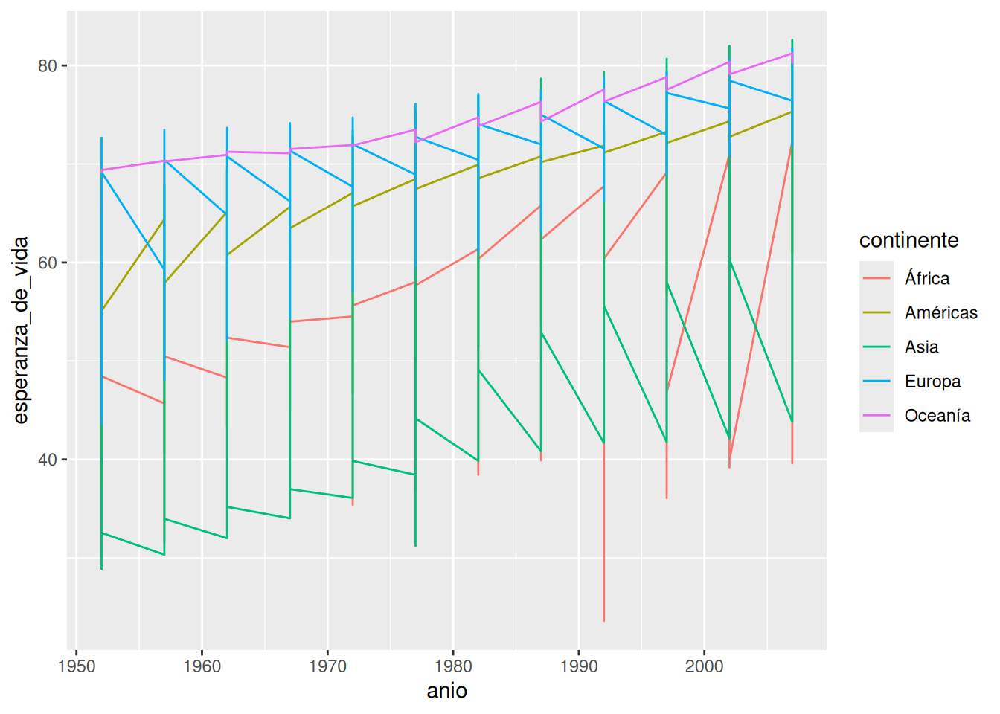
Por suerte las funciones geom_*() tienen más o menos nombres amigables. Pero el gráfico sigue teniendo problemas, al parecer dibujó una línea por continente. Si estuviéramos dibujando este gráfico con lápiz y papel muy posiblemente hubiéramos identificado los puntos que corresponden a cada país y los hubiéramos “unido con líneas”, necesitamos que ggplot2 haga esto. ¿Cómo le indicamos que puntos corresponde a cada país? Necesitamos que los agrupe por la variable pais (¡qué bueno que tenemos toda esa información en nuestra base de datos!).
ggplot(data = paises, mapping = aes(x = anio, y = esperanza_de_vida)) +
geom_line(aes(color = continente, group = pais))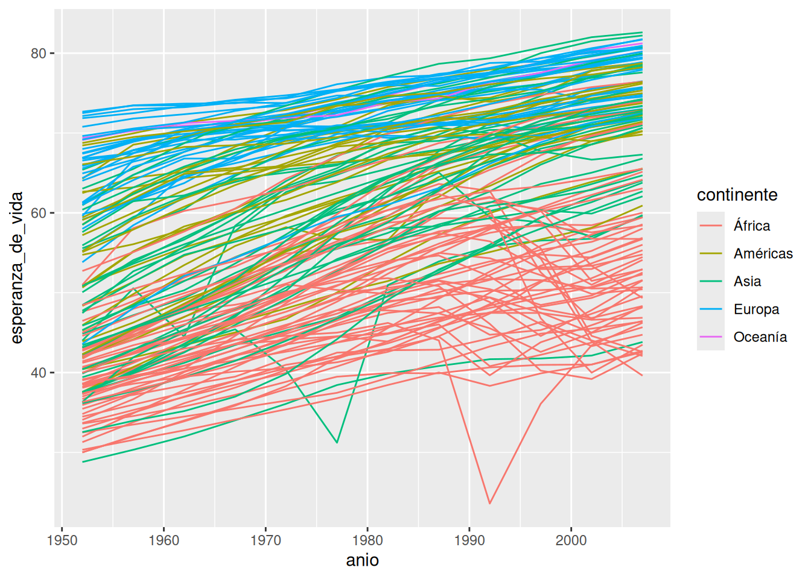
Usamos el argumento group = y de nuevo, lo incluimos dentro de la función aes() para indicarle a ggplot2 que busque la variable pais dentro del data.frame que estamos usando.
Y ahora si, conseguimos el gráfico que estamos buscando.
Cuando mencionamos que ggplot2 construye gráficos por capas, lo decíamos en serio! Hasta ahora tenemos dos capas: el área del gráfico y una geometría (las líneas).
- Sumá una tercera capa para visualizar puntos además de las líneas.
- ¿Porqué los puntos ahora no siguen los colores de los continentes?
- ¿Qué cambio podrías hacer para que los puntos también tengan color según el continente?
Acá surge una característica importante de las capas: pueden tener apariencia independiente solo mapeamos el color en la capa de las líneas y no en la capa de los puntos. Al mismo tiempo, si quisiéramos que todas las capas tenga la misma apariencia podemos incluir el argumento color = en la función global ggpplot() o repetirlo en cada capa.
ggplot(paises, aes(anio, esperanza_de_vida)) +
geom_line(aes(color = continente, group = pais)) +
geom_point()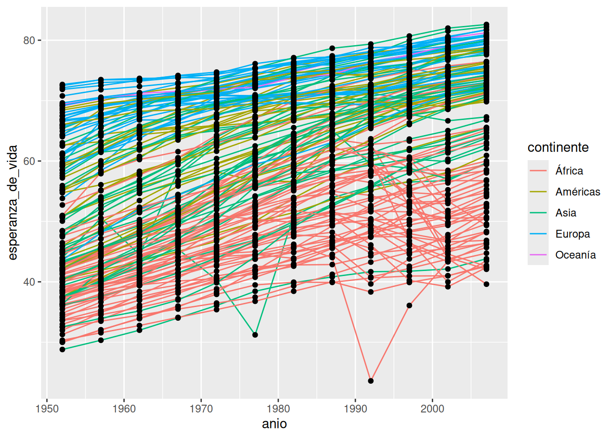
Si te preguntabas a donde fueron a parar el data =, el mapping = y los nombres de los argumentos adentro de la función aes(), x = e y =, resulta que estamos aprovechando que tanto ggplot2 como nosotros ahora sabemos en que orden recibe la información cada función. Siempre el primer elemento que le pasemos o indiquemos a la función ggplot() será el data.frame.
Algunos argumentos para cambiar la apariencia de las geometrías son:
-
colorocolourmodifica el color de líneas y puntos -
fillmodifica el color del área de un elemento, por ejemplo el relleno de un punto -
linetypemodifica el tipo de línea (punteada, continua, con guiones, etc.) -
pchmodifica el tamaño del punto -
sizemodifica el tamaño de los elementos (por ejemplo el tamaño de puntos o el grosor de líneas) -
alphamodifica la transparencia de los elementos (1 = opaco, 0 = transparente) -
shapemodifica el tipo de punto (círculos, cuadrados, triángulos, etc.)
El mapeo entre una variable y un parámetro de geometría se hace a través de una escala. La escala de colores es lo que define, por ejemplo, que los puntos donde la variable continente toma el valor "África" van a tener el color rosa (●), donde toma el valor "Américas", mostaza (●), etc…
Modificar elementos utilizando un valor único
Es posible que en algún momento necesites cambiar la apariencia de los elementos o geometrías independientemente de las variables de tu data.frame. Por ejemplo podrías querer que todos los puntos sean de un único color: rojos. En este caso geom_point(aes(color = "red")) no va a funcionar -ojo que los colores van en inglés-. Lo que ese código dice es que mapee el parámetro geométrico “color” a una variable que contiene el valor "red" para todas las filas. El mapeo se hace a través de la escala, que va a asignarle un valor (rosa ●) a los puntos correspondientes al valor "red".
Ahora que no nos interesa mapear el color a una variable, podemos mover ese argumento afuera de la función aes(): geom_point(color = "red").
6.0.5 Relación entre variables
Muchas veces no es suficiente con mirar los datos crudos para identificar la relación entre las variables; es necesario usar alguna transformación estadística que resalte esas relaciones, ya sea ajustando una recta o calculando promedios.
Para alguna transformaciones estadísticas comunes, ggplot2 tiene geoms ya programados, pero muchas veces es posible que necesitemos manipular los datos antes de poder hacer un gráfico. A veces esa manipulación será compleja y entonces para no repetir el cálculo muchas veces, guardaremos los datos modificados en una nueva variable. Pero también podemos encadenar la manipulación de los datos y el gráfico resultante.
Por ejemplo, calculemos la esperanza de vida media por continente y para cada año usando dplyr y luego grafiquemos la esperanza_de_vida_media a los largo de los anios:
library(dplyr)
paises |>
group_by(continente, anio) |>
summarise(esperanza_de_vida_media = mean(esperanza_de_vida)) |>
ggplot(aes(anio, esperanza_de_vida_media)) + # Acá se acaban los |> y comienzan los "+"
geom_point()Esto es posible gracias al operador |> que le pasa el resultado de summarise() a la función ggplot(). Y este resultado no es ni más ni menos que el data.frame que necesitamos para hacer nuestro gráfico. Es importante notar que una vez que comenzamos el gráfico ya no se puede usar el operador |> y las capas del gráfico se suman como siempre con +.
Este gráfico entonces parece mostrar que la esperanza de vida fue aumentado a lo largo de los años pero sería interesante ver esa relación más explícitamente agregando una nueva capa con geom_smooth().
paises |>
group_by(continente, anio) |>
summarise(esperanza_de_vida_media = mean(esperanza_de_vida)) |>
ggplot(aes(anio, esperanza_de_vida_media)) +
geom_point() +
geom_smooth()`summarise()` has grouped output by 'continente'. You can override using the
`.groups` argument.
`geom_smooth()` using method = 'loess' and formula = 'y ~ x'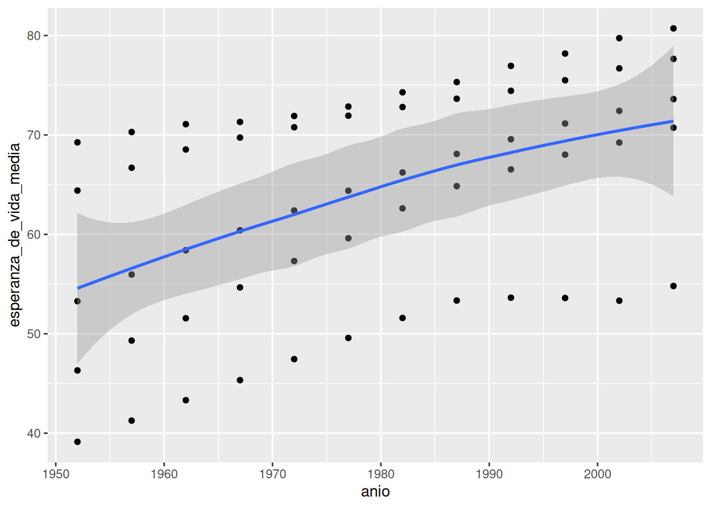
Como dice en el mensaje, por defecto geom_smooth() suaviza los datos usando el método loess (regresión lineal local) cuando hay menos de 1000 datos. Seguramente va a ser muy común que quieras ajustar una regresión lineal global. En ese caso, hay que poner method = "lm":
paises |>
group_by(continente, anio) |>
summarise(esperanza_de_vida_media = mean(esperanza_de_vida)) |>
ggplot(aes(anio, esperanza_de_vida_media)) +
geom_point() +
geom_smooth(method = "lm")`summarise()` has grouped output by 'continente'. You can override using the
`.groups` argument.
`geom_smooth()` using formula = 'y ~ x'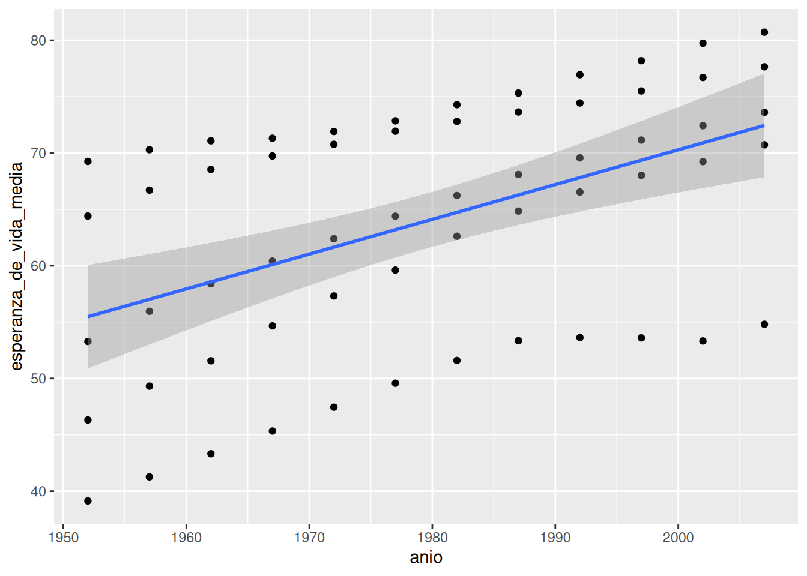
En gris nos muestra el intervalo de confianza al rededor de este suavizado que en este caso es bastante grande ¡porque tenemos pocos datos!
Cómo cualquier geom, podemos modificar el color, el grosor de la línea y casi cualquier cosa que se te ocurra.
Modificá el siguiente código para obtener el gráfico que se muestra más abajo.
paises |>
group_by(continente, _____) |>
summarise(esperanza_de_vida_media = mean(esperanza_de_vida)) |>
ggplot(aes(anio, ________________)) +
geom_point(aes(color = continente), size = 3, shape = _____) +
geom_smooth(color = continente) `summarise()` has grouped output by 'continente'. You can override using the
`.groups` argument.
`geom_smooth()` using method = 'loess' and formula = 'y ~ x'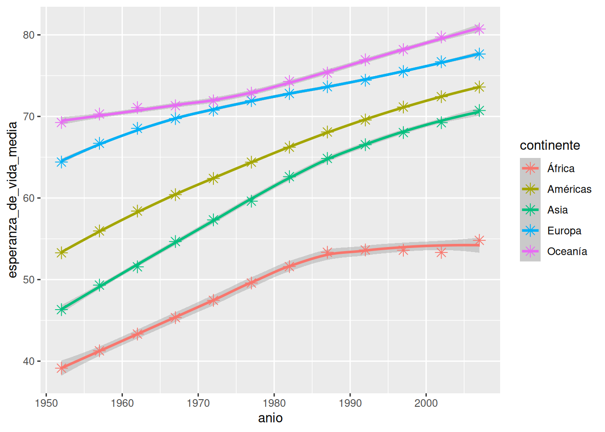
Vamos a seguir aprovechando el paquete datos, en este caso diamantes que contiene información sobre ~ 54000 diamantes, incluido el precio, el quilate, el color, la claridad y el corte de cada uno.
tibble [53,940 × 10] (S3: tbl_df/tbl/data.frame)
$ precio : int [1:53940] 326 326 327 334 335 336 336 337 337 338 ...
$ quilate : num [1:53940] 0.23 0.21 0.23 0.29 0.31 0.24 0.24 0.26 0.22 0.23 ...
$ corte : Ord.factor w/ 5 levels "Regular"<"Bueno"<..: 5 4 2 4 2 3 3 3 1 3 ...
$ color : Ord.factor w/ 7 levels "D"<"E"<"F"<"G"<..: 2 2 2 6 7 7 6 5 2 5 ...
$ claridad : Ord.factor w/ 8 levels "I1"<"SI2"<"SI1"<..: 2 3 5 4 2 6 7 3 4 5 ...
$ profundidad: num [1:53940] 61.5 59.8 56.9 62.4 63.3 62.8 62.3 61.9 65.1 59.4 ...
$ tabla : num [1:53940] 55 61 65 58 58 57 57 55 61 61 ...
$ x : num [1:53940] 3.95 3.89 4.05 4.2 4.34 3.94 3.95 4.07 3.87 4 ...
$ y : num [1:53940] 3.98 3.84 4.07 4.23 4.35 3.96 3.98 4.11 3.78 4.05 ...
$ z : num [1:53940] 2.43 2.31 2.31 2.63 2.75 2.48 2.47 2.53 2.49 2.39 ...6.1 Gráficos de frecuencias
Este es un gráfico de barras construido usando la función geom_bar(). En el eje x muestra el corte de los diamantes y en el eje y la cantidad (count en inglés) de diamantes en cada categoría. Pero diamantes no tiene una variable que se llame count y tampoco la generamos nosotros. ¡Es calculada internamente por ggplot2!
Cómo el gráfico de barras, también podemos graficar histogramas con geom_histogram() y polígonos de frecuencia con geom_density() para visualizar la cantidad de observaciones que caen en cada categoría (si la variable es discreta como el caso del corte de los diamantes) o rango de valores (para variables continuas).
Un ejemplo de variable continua es el precio de los diamantes, veamos como se ve un histograma y de paso le cambiamos el color a las barras, pero ojo, solo al borde.
ggplot(diamantes, aes(precio)) +
geom_histogram(fill = "darkorange")`stat_bin()` using `bins = 30`. Pick better value with `binwidth`.¿Notaste el mensaje que devuelve el gráfico?
`stat_bin() using bins = 30. Pick better value with binwidth.`
Esta geometría tiene dos argumentos importantes bins y binwidth. Cambiá el valor de alguno de los dos argumentos y volvé a generar el gráfico, ¿que rol juegan los argumentos?
También podés revisar la documentación.
Además de contar la cantidad de elementos, ggplot2 puede calcular muchas otras transformaciones sobre los datos. Por ejemplo si quisiéramos el porcentaje o la proporción que le corresponde a cada categoría de corte respecto del total podemos hacerlo mapeando esa transformación prop al eje y con la función after_stat().
ggplot(data = diamantes, aes(x = corte)) +
geom_bar(aes(y = after_stat(prop), group = 1))Fijate que la variable prop no es una columna de diamantes sino que es el nombre de una variable computada por geom_bar(), por eso hay que rodearla de la función stat(). El nombre de las variables computadas por cada geoms está en su documentación (abajo de todo, antes de los ejemplos).
Ahora podríamos decir que el 40% de los diamantes en la base de datos tienen un corte ideal. Además de la función after_stat() agregamos group = 1 y esto no fue sin querer. Probá correr el gráfico sin ese argumento.
Al incluir group = 1, ggplot2 junta todas las observaciones en un único grupo (con el valor 1) y calcula la proporción o el porcentaje que representa cada corte respecto del total de diamantes. Si no incluimos eso, ggplot2 asumirá que cada categoría de corte es un grupo independiente y el cálculo del porcentaje también lo hará por separado.
Las geometrías geom_col() y geom_bar() tienen un argumento llamado position que afecta como se organizan las barras particularmente cuando mapeamos una tercer variable al relleno. Por ejemplo:
- Revisá la documentación de estas geometrías e identificá las distintas opciones que puede tomar el argumento position.
- Probá cada uno y comparalos para ver las diferencias.
6.2 Gráficos de caja
Los diagramas de caja, mejor conocidos como boxplots calculan un resumen robusto de la distribución y luego muestran una caja con formato especial.
La línea central de la caja corresponde a la mediana (el valor que toma el dato central) y los extremos de la caja son los cuartiles 1 y 3, definiendo así el rango intercuartil (IQR). Los extremos están definidos como el valor observado que no esté más lejos de 1.5*IQR de la mediana y los puntos son los las observaciones que se escapan de ese rango, que pueden ser considerados outliers o valores extremos.
ggplot(diamantes, aes(claridad, precio)) +
geom_boxplot()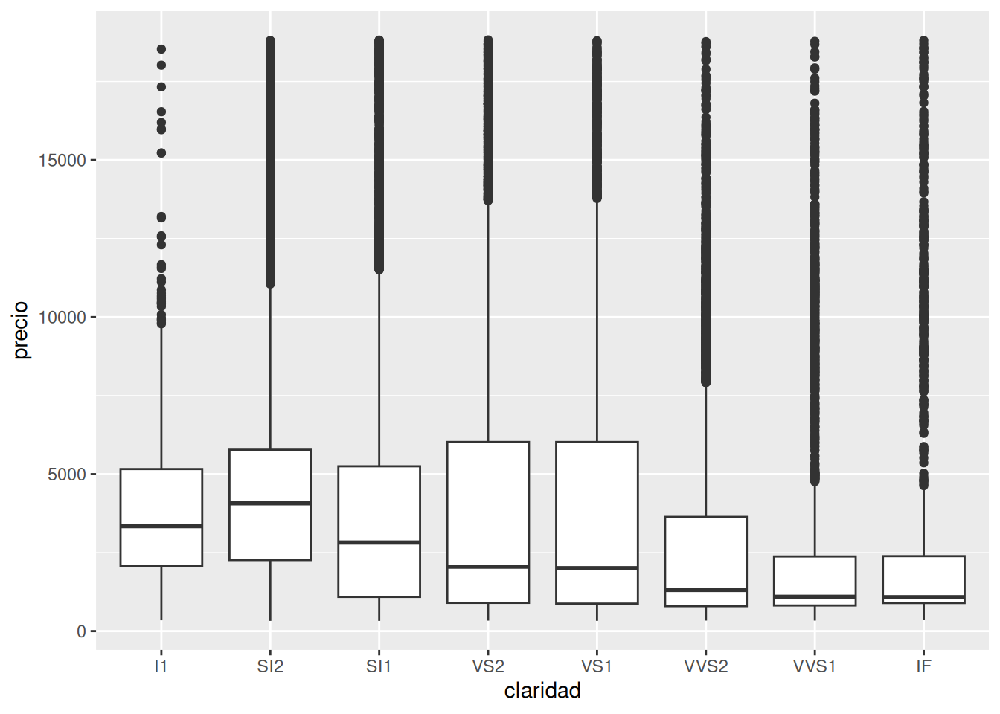
Los boxplot dan muchísima información sobre los datos pero al mismo tiempo esconden la cantidad de observaciones que se usaron para generarlos y en particular cual es la frecuencia a lo largo del eje y. Por esta razón también existen geom_violin() y geom_jitter().
- Volvé a graficar la distribución del precio para cada tipo de claridad pero ahora usando
geom_violin()ygeom_jitter(). - ¿Qué ventajas y desventajas encuentran respecto de
geom_boxplot()?
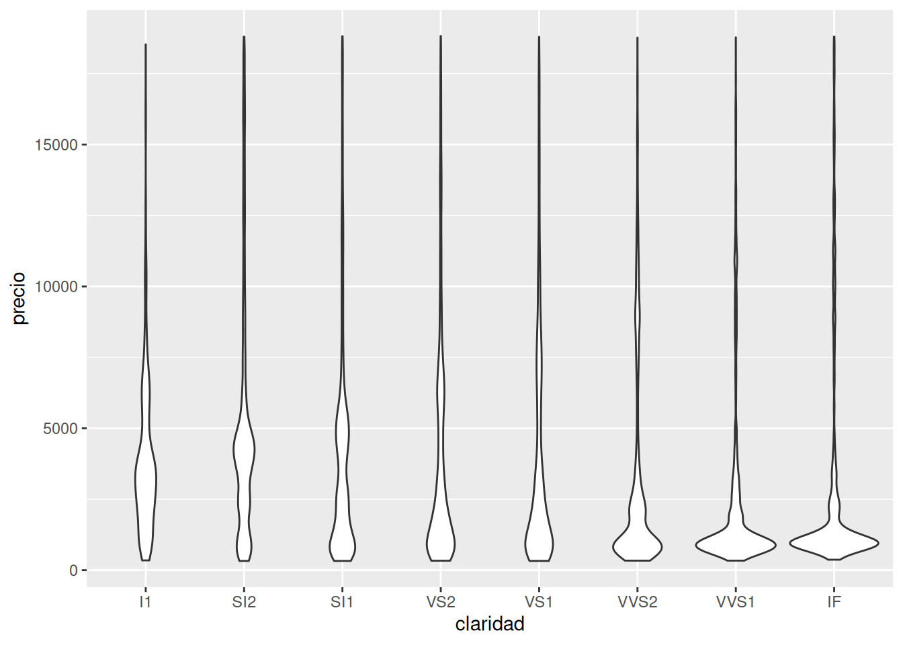
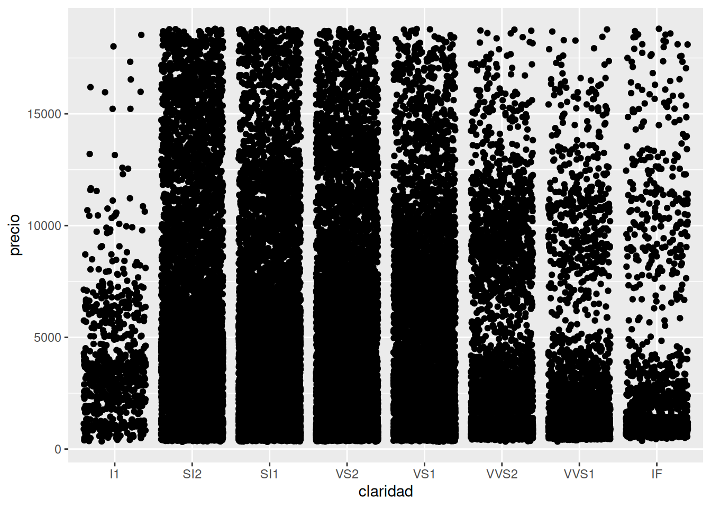
Cuando nuestra base de datos es muy grande corremos el riesgo de que los elementos del gráfico estén tan juntos que se solapen y no se vean. Esto se conoce como overplotting. La base de datos diamantes tiene 53940 observaciones y al graficar un punto por cada una, aún si están separados por la claridad, quedan superpuestos.
Para resolver este problema se suele modificar la estética de los elementos, cambiando el tamaño o size para que ocupen menos lugar y se vean mejor, cambiando la forma o shape por alguna que no tenga relleno y permita ver los elementos que hay atrás o modificando la transparencia o alpha por la misma razón. En bases de datos tan grandes como la de diamantes, muchas veces hay que utilizar varios de estos recursos.
6.3 Graficando en múltiples paneles
Vimos que es posible graficar más de dos variables en un gráfico mapeando una variable al color o por ejemplo el tipo de línea o linetype
ggplot(diamantes, aes(quilate, precio)) +
geom_point(aes(color = color))En este caso no solo visualizamos la relación entre el precio y el quilate del diamante, también podemos ver que rol juega el color. También podríamos haber intentando resolver el problema generando un gráfico por cada color filtrando las observaciones correspondientes.
diamantes %>%
filter(color == "D") %>%
ggplot(aes(quilate, precio)) +
geom_point(aes(color = color))
Pero sería muchísimo trabajo si tenemos que hacer esto para cada una de las 7 categorías de color. La buena noticia es que ggplot2 tiene un par de funciones justo para resolver este problema:
ggplot(diamantes, aes(quilate, precio)) +
geom_point(aes(color = color)) +
facet_wrap(~color)Esta nueva capa con facet_wrap() divide al gráfico inicial en 7 paneles o facets, uno por cada color. Esta función requiere saber que variable será la responsable de separar los paneles y para eso se usa la notación de funciones de R: ~color. Esto se lee como generar paneles “en función del color”.
¿Y si quisiéramos generar paneles a partir de 2 variables? Para eso existe facet_grid(). En este gráfico generamos paneles viendo la “relación entre el corte y el color” y por ejemplo en el primer panel arriba a la izquierda podremos observar los diamantes que son al mismo tiempo de color D y corte Regular. En este caso mapear la variable color al color de los diamantes no parece ser necesario ya que cada columna ya nos permite identificar eso, sin embargo en algunos casos ayuda a leer el gráfico más rápido.
ggplot(diamantes, aes(quilate, precio)) +
geom_point(aes(color = color)) +
facet_grid(corte~color)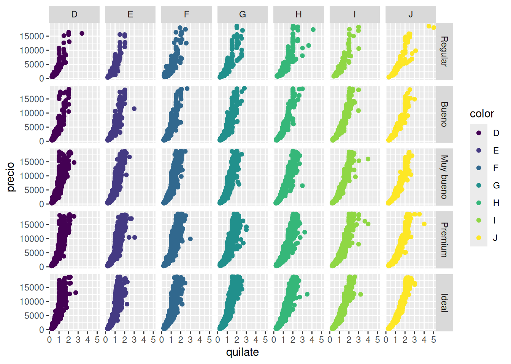
Generá boxplots para analizar como se comporta el precio según la claridad para cada tipo de corte como se ve acá.
Sigamos analizando los datos de estaciones meteorológicas.
- Graficá la temperatura de abrico para la estación NH0437 (tendrías que filtrar los datos para quedarte solo con esta estación). Sumá una regresión linea, ¿se mentiene constante la temperatura media con el tiempo o cambia?
- Calculá el promedio mensual de la temperatura de abrigo para cada estación y gráfica el resultado. El gráfico tendría que tener más o menos esta pinta:
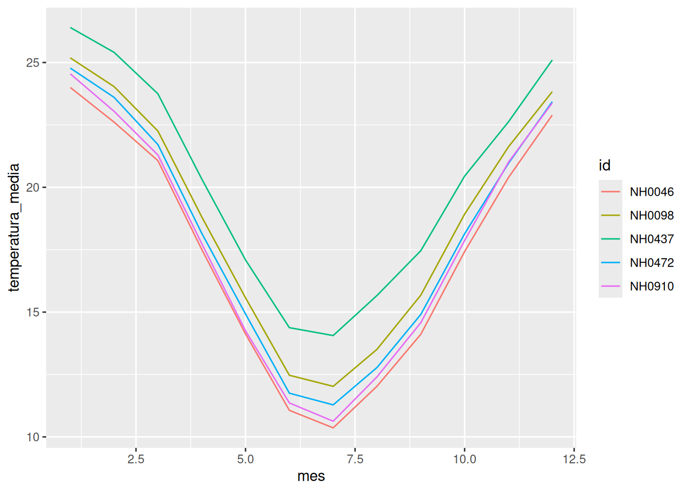
- ¿Cuál es la relación entre la temperatura de abrigo y la humedad? Hacé un gráfico de puntos que muestre la relación, podés sumar un suavisado (opcional). Para la humedad utilizá la varable
humedad_media_8_14_20.